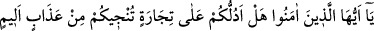

AZAPTAN KURTARACAK TİCARETİ
SİZE GÖSTEREYİM Mİ?
10. Ey îman edenler! Sizi acı bir azaptan kurtaracak ticareti size göstereyim mi?
11. Allah’a ve Rasûlüne inanır, mallarınızla ve canlarınızla Allah yolunda cihad
edersiniz. Eğer bilirseniz, bu sizin için daha hayırlıdır.
12. İşte bu takdirde O, sizin günahlarınızı bağışlar, sizi zemininden ırmaklar akan
cennetlere, Adn cennetlerindeki güzel meskenlere koyar. İşte en büyük kurtuluş
budur.
13. Seveceğiniz başka bir şey daha var: Allah’tan yardım ve yakın bir fetih.
Müminleri (bunlarla) müjdele.
“Ey îman edenler! Sizi acı bir azaptan kurtaracak” Allah’ın sizi kurtarmasına sebep
olacak “ticareti size göstereyim mi?” Ticaret için kayıtlayıcı bir sıfatın gelmesinin
faydası, ticaretlerin bir kısmı sâhibi için karlı ve faydalı olmadığındandır. Nitekim,
“Asla zarara uğramayacak bir kazanç umabilirler” (Fâtır, 35/29) anlamındaki âyet-i
kerîme’nin ifâde ettiği gibi ticaretin zararla sonuçlanması ve kesadı sâhibi için acı
verici bir azab olur. Mal toplayıp yığarak saklamak, malî yönden hakkını vermemek
gibi. Bu durum âhirette çok büyük bir sorumululuk ve vebaldir. İşte bu ticaret, hüsran ve
zarardır. İslam hukukuna ve sünnete uygun olmayan veya Allah rızâsından başka
amaçlarla yapılan işler ve ameller de böyledir. “Acı bir azab”, acıtıcı azab, görünürde
bedene âid olduğu gibi; hasret ve sıkıntıdan ibâret, görünmeyen, ruhî de olur. Âyet-i
kerîme’deki soruya karşılık, sanki mü’minler, acı veren azabdan kurtulmak için ne
yapalım, nasıl hareket edelim? demiş gibi onlara şöyle cevap verildi: